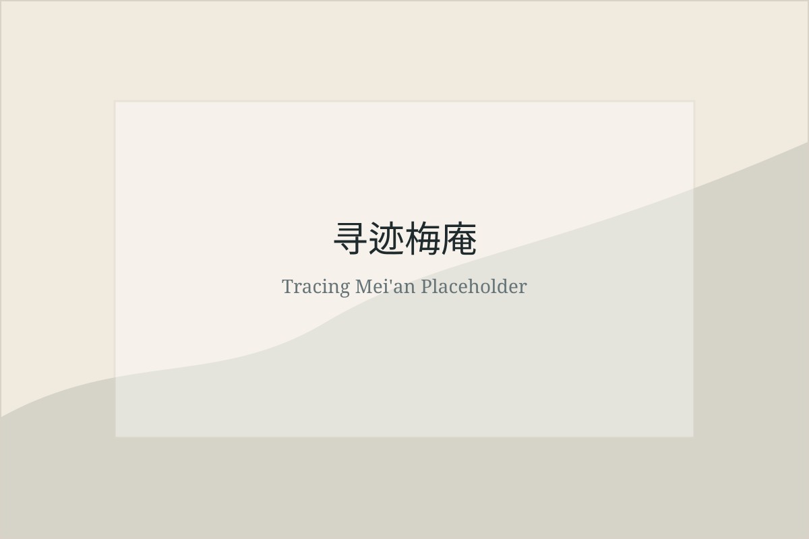

东南大学社会实践项目

梅庵
梅庵位于东南大学四牌楼校区，是承载校史记忆、教育传统与文化传承的重要空间。本项目以梅庵为寻迹起点，连接人物、建筑与青年实践。
团二大
团二大相关历史为项目提供了理解青年使命、校友担当与革命记忆的重要线索。网站后续将补充正式史料、时间线与实践队研究成果。
首版框架
预留 3D 建模、人物访谈、史料问答与数字展陈入口。
预留旧址三维模型、空间导览、建筑信息与校史线索。
集中呈现往年社会实践成果、调研记录、影像资料与展示材料。